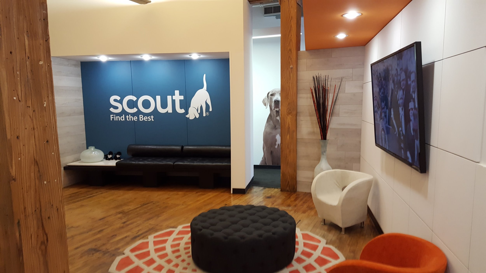
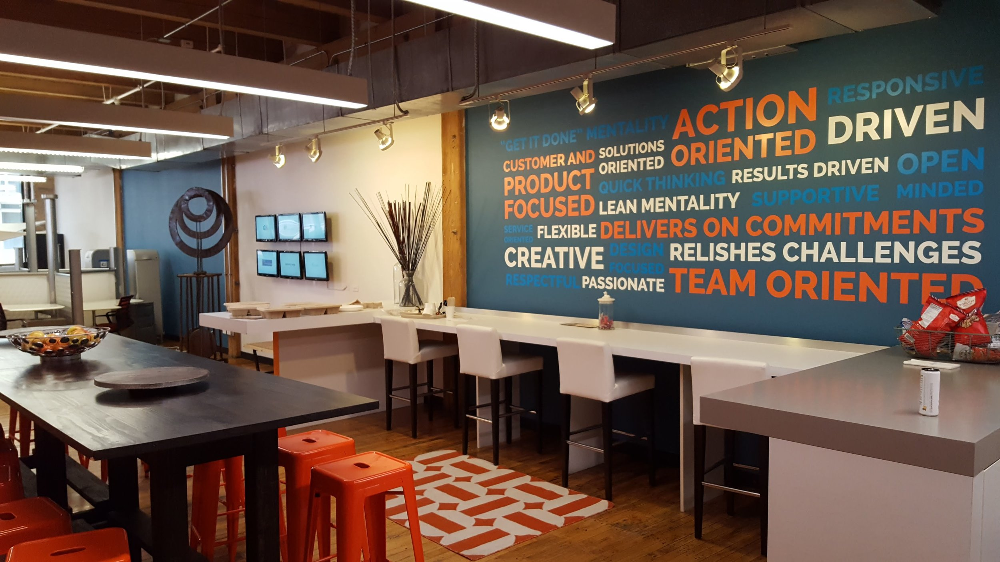
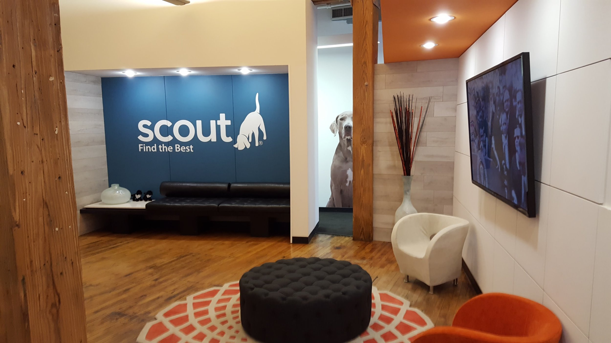
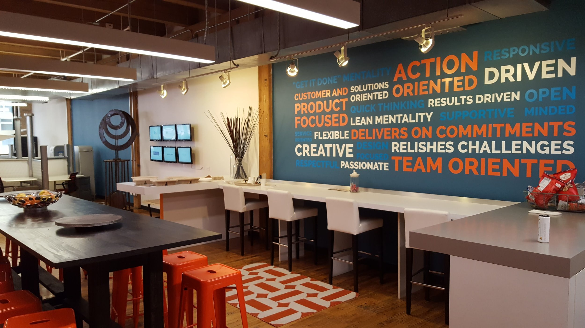
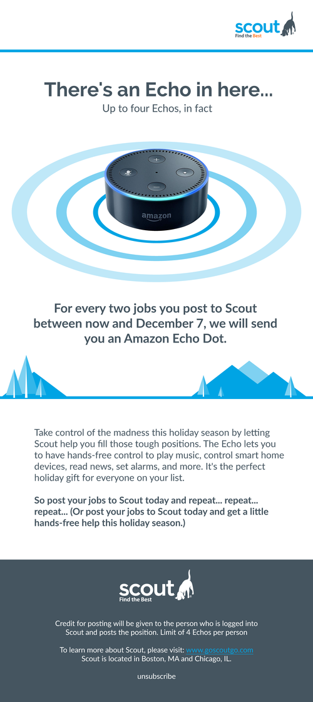
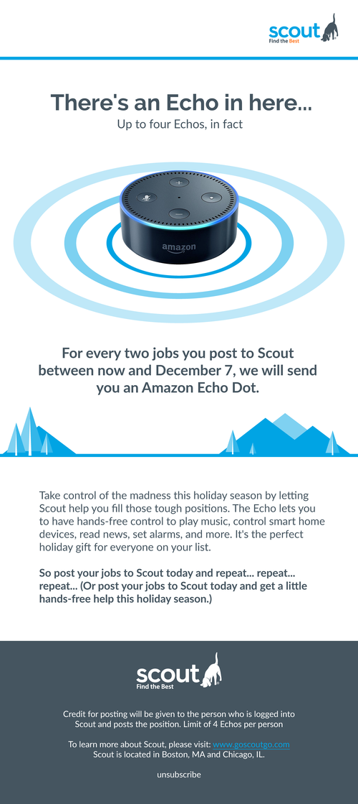

Scout helps connect companies with the best recruiters to fill positions faster and at lower cost. Located in Boston and Chicago.
JOB SUMMARY
When I started at Scout in 2016, they had just finished their new website and brought me on to help unify their brand. With offices in Boston and Chicago and sales associates all over the country, they needed someone to help shift their image from a scrappy startup to that of a high-tech, data-driven software company.
As a member of the marketing team, my primary duty was to help establish and enforce the company brand guidelines. As the only full-time designer at Scout, I generated work used in online and offline marketing, trade shows, presentations, and videos. With guidance from the VP of Marketing and Scout’s President, I was part of the approval chain for all outward-facing marketing materials.
*While most of the work I did was proprietary, the items below are samples of public-facing
material that I helped to create for Scout. Out of respect for Scout, I have not included any
process work or pieces I did not receive permission to share.
WEB PAGES
Scout’s marketing strategy branches across multiple forms of media, but a great deal of them lead, at one point or another, to a landing page. As Scout’s digital marketing plan expanded, the Digital Marketing Manager saw a need for a more unified experience for all interested parties.
I worked with her to create a set of templates that allowed us to deliver custom messaging depending on how visitors arrived to the page. We included space for flexible imagery, value propositions, and input fields. This allowed her to collect data on where traffic was coming from and analyze what messaging resulted in the highest engagement rates.
EMAIL SAMPLES
Scout wants to make sure that their users know they are valued, hoping in return that they will stay engaged with the product. One method they use is event-driven emails for existing clients to demonstrate gratitude and celebrate successes. Below are two such emails I designed in Scout’s new branding style highlighting milestones for users.
BANNER ADS
Below is a sample of banner ads that ran on LinkedIn in 2017. They were targeted at search firm recruiters and hiring managers seeking to place candidates. We included value propositions that highlight how Scout can help each group respectively. The ads all carried similar visual styles so that we could hone-in on what messaging had the most impact on click-through rates.
OFFICE BRANDING
Below you will see a collection of images featuring what was once an empty office. In November 2017, I flew out to Chicago, met with Scout's President, and helped turn a blank slate into Scout's Chicago home. The goal was to make the place a fun, creative, and collaborative environment that shows pride in the Scout brand. The tricky part was that none of my co-workers one floor below had the foggiest idea why I was in Chicago, or that they'd be moving in a couple of months. Needless to say, this was a hard secret to keep.
I worked with Anna Badowski, the executive assistant, to plan color palettes, signage, and decals that matched Scout’s style. When I flew back to Boston, I went to work creating all of the necessary files and assets that we passed off to the amazing team at Cushing for production and installation.
The end result can be seen below, and I am proud to say we were featured in Chicagoinno's "Office Envy" column in January 2017.


 



ICONOGRAPHY
Scout has an extensive icon library that is used all over its marketing materials. I inherited a large batch of them when I started, but not all of them fit a unified style. Over time, I combed through all of the assets at Scout and made the icon library cohesive and a reflection of Scout’s high-tech roots. The sample below is a small batch, specifically focused on perks and benefits. Can you take a guess at what a few of them mean?


HOLIDAY EMAILS
Not all emails are product-focused. We created promos and greetings as well. These are some samples of email graphics I created in December 2016 themed around the holiday season. I wanted to toss in a bit of motion for the two card ideas, so I animated them in Photoshop and exported gifs that were optimized for emails. While I made a variety of options, these are my favorites of the bunch.

 
